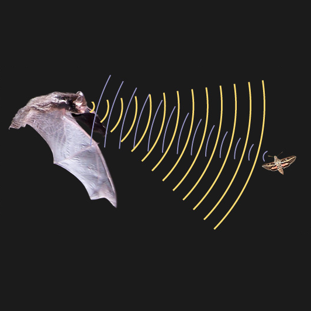

Nagel on what it’s like
Wed., Apr. 22
This online class session covers Thomas Nagel’s critique of physicalist accounts that leave out the subjective character of
experience: “what it’s like to be” a certain type of organism. He argues that it seems impossible for there to be an
objective theory of consciousness, and that we do not yet understand how physicalism could be true.
Key Concepts: Objective and Subjective, Consciousness
Readings:
Nagel, “What Is It Like to Be a Bat?” (Textbook ch. 25)
Class Materials:
Other Resources:
Stanford Encyclopedia of Philosophy
Internet Encyclopedia of Philosophy
A Field Guide to the Philosophy of Mind